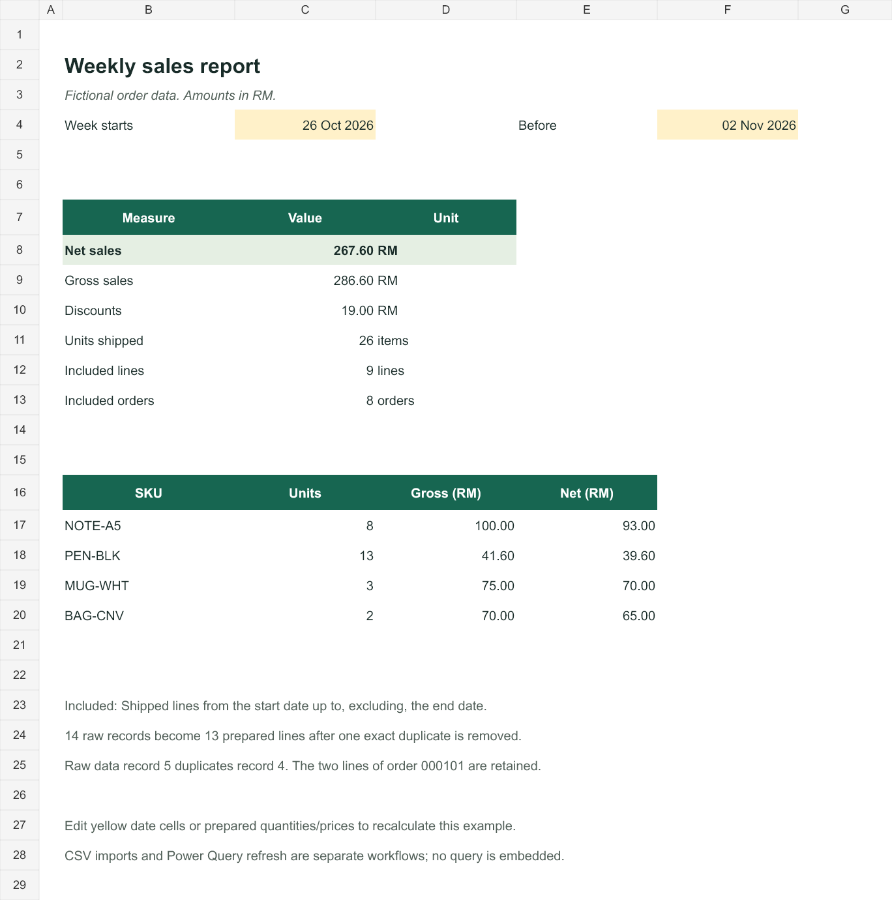
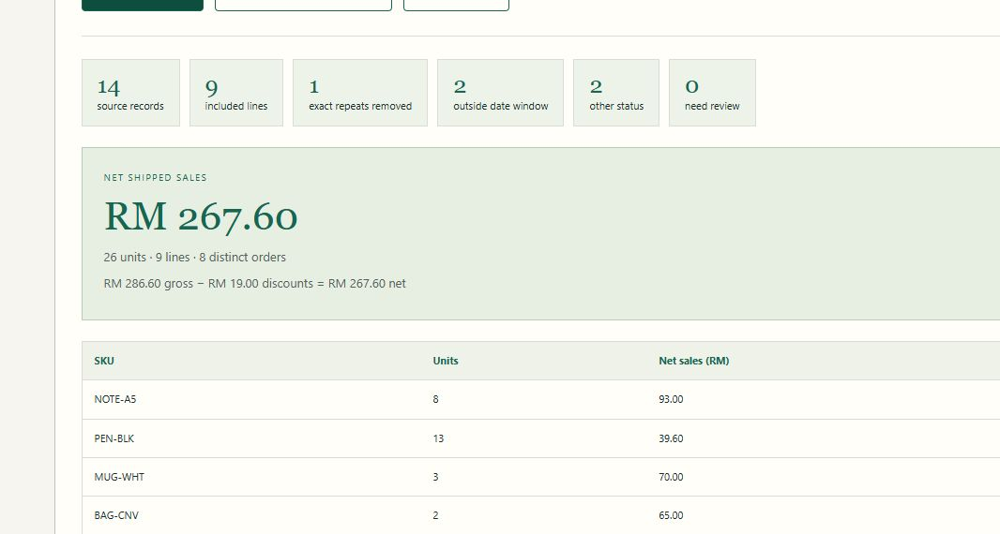

The result you should reproduce
For this fictional export, the reporting week starts October 26, 2026 and ends before November 2, 2026. Include Shipped lines only. After removing one exact duplicate, the answer is RM267.60 net sales, 26 units, nine eligible lines, and eight distinct orders. This is an order-reporting exercise, not an accounting revenue-recognition rule.
Work with the example
Original export ↓Prepared CSV ↓Included report lines ↓Formula-driven workbook ↓All records are fictional. Import CSV identifier columns as Text. Quoted CSV fields do not define spreadsheet column types.

Try the complete calculation in your browser
The weekly sales reconciler calculates the same example locally. Load the fictional sample, inspect the date window and day-first convention, and run the report. The sample enables removal of the one known exact repeated record.

Each source record has a decision and a reason. The counts must reconcile: 14 source records = nine included + one repeated record removed + two outside the dates + two with other statuses. Invalid amounts, unresolved dates, and conflicting line keys keep the total unavailable until reviewed.
For a deliberate counterexample, turn exact-repeat removal off. The sample's total becomes RM315.60 because the repeated RM48.00 line remains. This is a preview of the consequence, not a recommendation to delete repeated rows in an unfamiliar source.
Trace the records before adding totals
Import identifiers as text and dates using the source's day-first convention. Data record 5 exactly repeats record 4 across every field. Remove that single repeated record from the prepared data and preserve both item lines belonging to order 000101. The workbook keeps all 14 original records on Raw export and 13 prepared lines on Orders, with a source-record number for each retained line.
| Step | Remaining records | Explanation |
|---|---|---|
| Original source | 14 | Includes one exact repeated record. |
| Prepared lines | 13 | One repeated record removed. |
| Inside the reporting week | 11 | Exclude October 25 and November 2. |
| Inside week and Shipped | 9 | Exclude one Cancelled and one Pending line. |
The original has RM prefixes in price and discount fields. The prepared workbook uses numeric amounts. A discount is a line amount in this sample; do not multiply it by quantity again.
Calculate line values, then the eligible total
On Orders, quantity is column G, unit price H, and line discount I. Gross and net values are calculated in K and L. Column M marks whether the date and status qualify.
K6 = G6*H6
L6 = K6-I6
M6 = IF(AND(E6>='Weekly report'!$C$4,
E6<'Weekly report'!$F$4,
J6="Shipped"),"Yes","No")On Weekly report, C8 sums eligible net values. The start date is inclusive and the end date is exclusive, which makes the boundary explicit.
=SUMIFS(Orders!$L$6:$L$18,Orders!$M$6:$M$18,"Yes")Line counts are not order counts. Order 000101 contributes two lines but one order. Orders column N counts the first included occurrence of each order, and the report sums those flags.
Check the result in two independent ways
| SKU | Units | Net sales (RM) |
|---|---|---|
| NOTE-A5 | 8 | 93.00 |
| PEN-BLK | 13 | 39.60 |
| MUG-WHT | 3 | 70.00 |
| BAG-CNV | 2 | 65.00 |
| Total | 26 | 267.60 |
Gross sales are RM286.60 and line discounts are RM19.00. Their difference is RM267.60. Independently, summing the included CSV lines gives the same amount. Counting all source records would include an extra RM48.00 from the repeated line before any other exclusions.
Try a controlled edit: change Orders G6 from 2 to 3. Net sales should increase by RM12.50 to RM280.10. Restore 2 afterwards. Change the report window to November 2 through before November 9 and the current sample should show RM25.00. These checks exercise the dependencies instead of merely reading a saved total.
Extend the example deliberately
The formulas in the downloaded example cover Orders rows 6–18. Appending rows outside that range will not extend the report automatically. Update the prepared range and all dependent summary ranges, or convert the prepared range to a structured Excel Table and rewrite the formulas accordingly. Keep the original source and record-removal decision with each reporting period.
The workbook contains formulas and prepared data. It contains no macros, external connections, or embedded Power Query query. The separate Power Query walkthrough explains how to build a refreshable import from your own file.
Sources & further reading
The sample data and worked calculations are original instructional examples. Spreadsheet menus and supported features depend on your installed version. See the verification method for the checks performed.
Continue the workflow